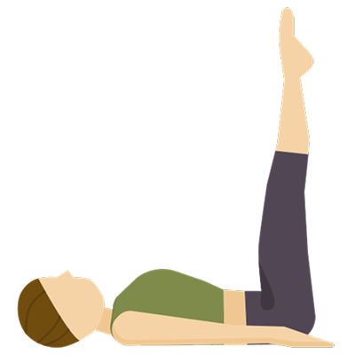
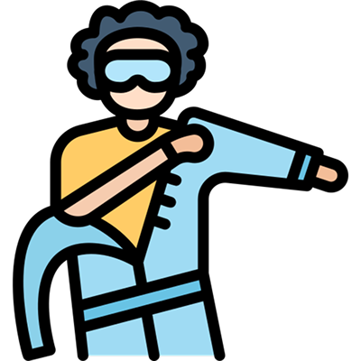
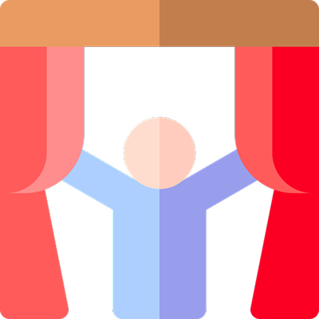
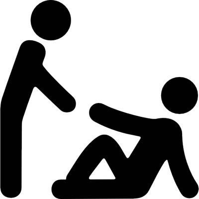
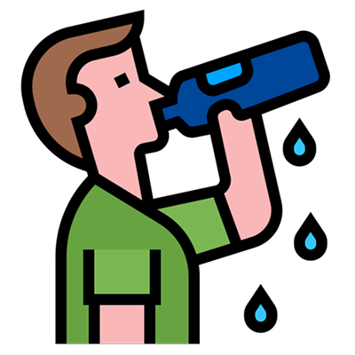

Desmaio
Passo 1 – Deite a pessoa de lado em um local seguro
Se a pessoa desmaiou, deite-a de lado, em posição lateral de segurança, para evitar sufocamento com saliva ou vômito.

Passo 2 – Eleve as pernas da pessoa
Isso ajuda a levar o sangue de volta para o cérebro, facilitando a recuperação.

Passo 3 – Afrouxe roupas apertadas
Afrouxe colarinho, cinto, lenço ou roupas que possam estar apertadas no pescoço ou na barriga.

Passo 4 – Ventile o ambiente
Mantenha o local arejado e fresco para facilitar a volta da consciência.

Passo 5 – Fale com a pessoa
Converse suavemente para ver se ela responde. Se acordar, mantenha-a deitada por alguns minutos.

Passo 6 – Após acordar, ofereça água
Quando a pessoa se recuperar, ofereça água e deixe-a levantar devagar. Fique por perto caso ela sinta tontura.